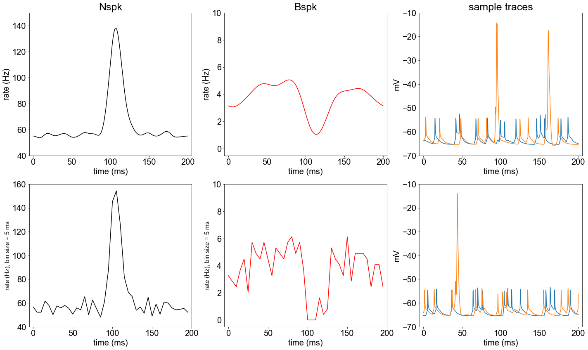
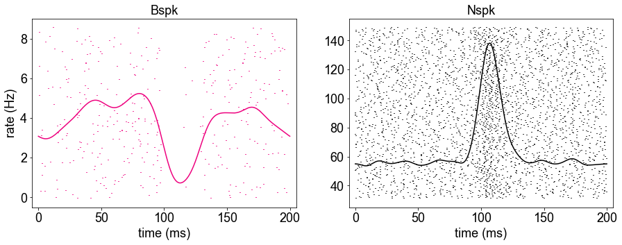

This is the ipython (jupyter) notebook associated with the paper:
Muller SZ, Zadina AN, Abbott LF, Sawtell NB (2019) Continual Learning in a Multi-Layer Network of an Electric Fish. Cell
http://dx.doi.org/10.1016/j.cell.2019.10.020
This code was contributed by S.Z. Muller. A snapshot of requirements is provided
in a sample_requirements.txt. However, it will likely work with packages with versions near these versions.
After you have installed NEURON and downloaded and extracted these files, please
compile the mod files with nrnivmodl. Start the jupyter notebook and execute
the cells in Generate plots.ipynb.
In a little under an hour the following images similar to panels in Fig 6B can
be generated:

Some extra figures, including sample of raw membrane potential traces and less smoothed rate traces:
